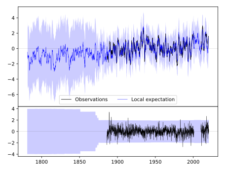
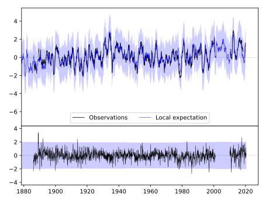
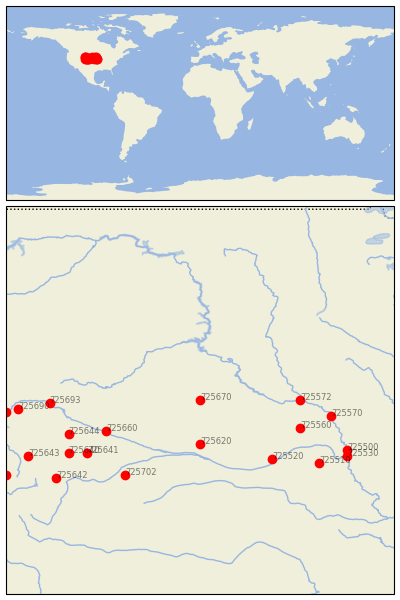

VALENTINE/MIL------- [USA---------]


| Neighbour | Name | Country | Distance | Lon/Lat | Years |
|---|
| 725670 | VALENTINE/MIL------- | USA--------- | 0 | -100.6, 42.9 | 1886-2020 |
| 725620 | STAPLETON 5W | USA | 155 | -100.6, 41.5 | 1875-2020 |
| 725572 | YANKTON | USA | 260 | -97.4, 42.9 | 1873-1980 |
| 725660 | SCOTTSBLUFF/COUNTY-A | USA--------- | 270 | -103.6, 41.9 | 1944-2017 |
| 725560 | NORFOLK/KARL STEFAN | USA | 280 | -97.4, 42.0 | 1946-2020 |
| 725520 | GRAND-ISLAND/------- | USA--------- | 284 | -98.3, 41.0 | 1938-2020 |
| 725702 | LE ROY | USA | 333 | -103.0, 40.5 | 1889-1980 |
| 725570 | SIOUX CITY | USA | 347 | -96.4, 42.4 | 1889-2020 |
| 725641 | PINE BLUFFS 5W | USA | 352 | -104.2, 41.2 | 1893-2019 |
| 725644 | CHUGWATER | USA | 366 | -104.8, 41.8 | 1893-2019 |
| 725510 | LINCOLN/MUNICIPAL AR | USA | 385 | -96.8, 40.9 | 1886-2020 |
| 725693 | DOUGLAS | USA | 391 | -105.4, 42.8 | 1909-1970 |
| 725640 | CHEYENNE WSFO AP | USA | 394 | -104.8, 41.2 | 1871-2020 |
| 725500 | OMAHA, NEBRASKA | USA | 426 | -95.9, 41.3 | 1873-2020 |
| 725530 | OMAHA | USA | 436 | -95.9, 41.1 | 1991-2000 |
| 725642 | WATERDALE | USA | 472 | -105.2, 40.4 | 1902-1980 |
| 725690 | BATES CREEK #2 | USA | 474 | -106.4, 42.6 | 1893-2020 |
| 725643 | FOXPARK | USA | 496 | -106.1, 41.1 | 1909-1970 |
| 725762 | PATHFINDER DAM | USA | 508 | -106.8, 42.5 | 1900-1990 |
| 725701 | STEAMBOAT SPRINGS | USA | 579 | -106.8, 40.5 | 1891-2019 |